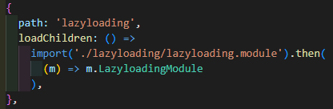
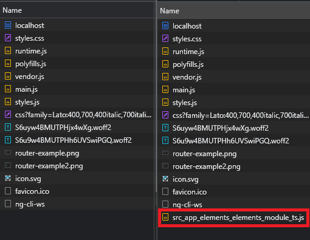

Usually you would have a module and a routing module for each component or set of components, for example:

This would then contain the routing rules as below:

In order to set up lazy loading you would have to remove any import statements for the modules from anywhere else in the project
For example the below would need to be removed

You would then need to add the 'lazyloading' Route into the main AppRoutingModule instead of its own lazyloading-routing.module.ts as below:

This then renders the lazyloading-routing.module.ts redundant.
I think this is a good solution because it keeps all of the routing in one place thus making it easier to manage.
The above is a bad solution as it would make it harder to expand on in the future and is essentially making the project non-modular, which is what Angular is designed to achieve
The correct implementation would be to remove the path from the router component as below:

And then setting up the actual lazy-loading within the app-routing.module.js as below:
This is giving it a path to look for 'lazyloading' and then binding it to the loadChildren function, which is then importing the file dynamically it will '.then' return the LazyloadingModule as above.
You have to remove the path from the individual routing modules as this is essentiually asking it to load the path twice, which would look like: localhost:4200/lazyloading/lazyloading
This will cause it to just load the current component when rendering and then just add each component on as they are navigated to (compiled as javascript) as seen below:
The image on the right is loading the home page, then the second image is navigating to the elements